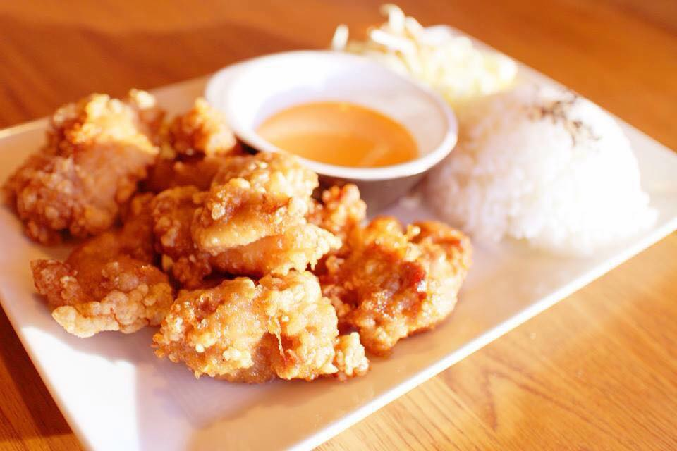
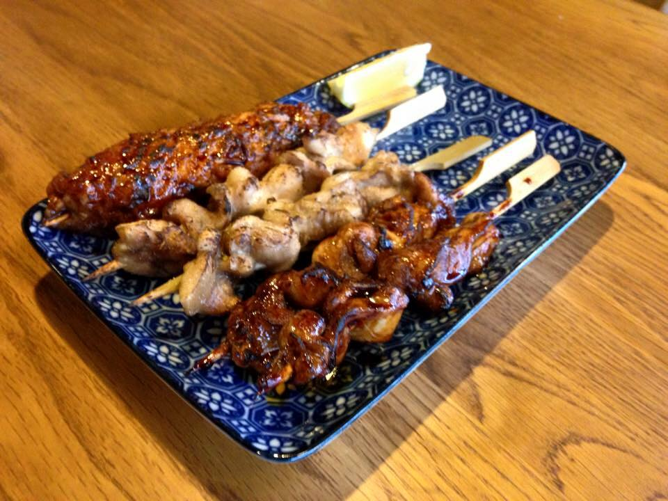
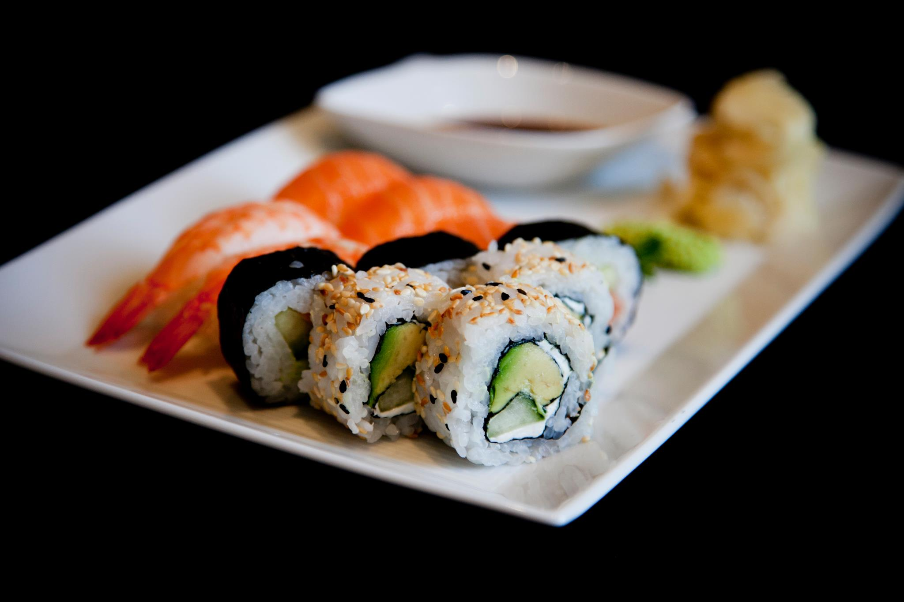
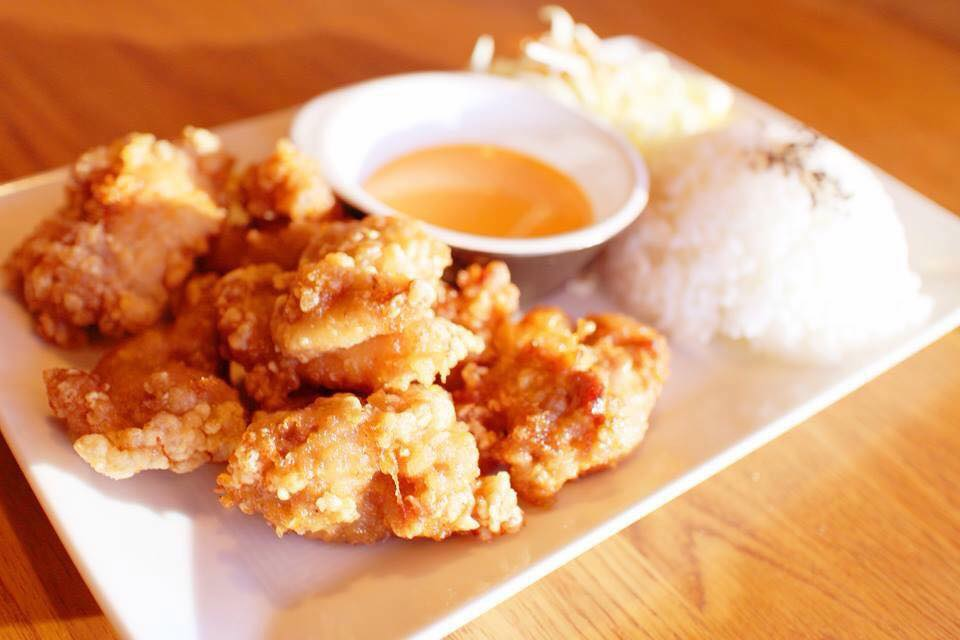
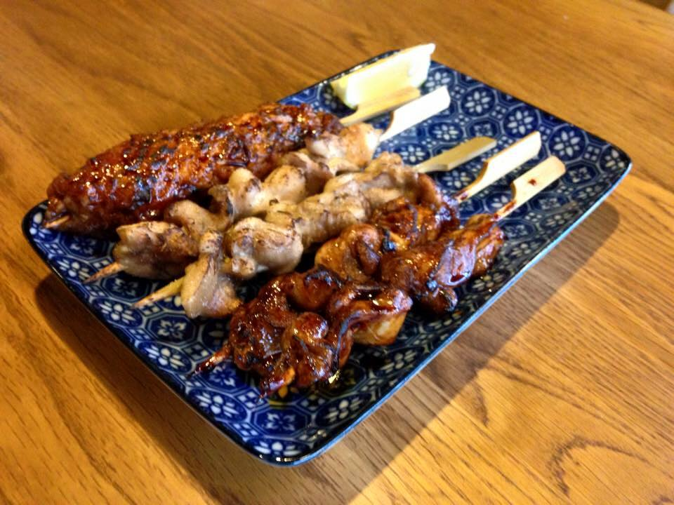
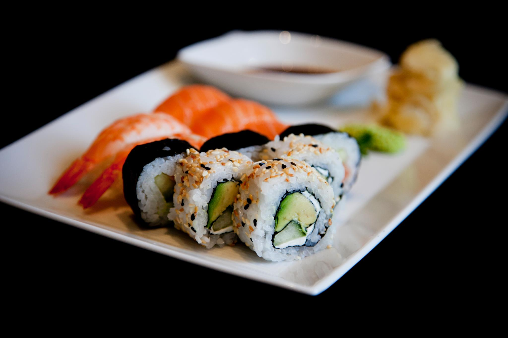

Meny
Hösten 2015
Alltid tillagat med dagsfärska ingredienser, varmrätter från det japanska köket såväl som sushi serveras till lunch och ala carte.
 





Sushi
- 8 bitar
2 laxnigiri, 2 räknigiri, 2 California, 2 maki - 11 bitar
4 laxnigiri, 2 räknigiri, 2 California, 3 maki
- 15 bitar
6 laxnigiri, 4 räknigiri, 2 California, 3 maki - 40 bitar
10 laxnigiri, 10 räknigiri, 10 California, 10 maki - 50 bitar
14 laxnigiri, 12 räknigiri, 12 California, 12 maki - 60 bitar
15 laxnigiri, 15 räknigiri, 15 California, 15 maki
Varmrätter
- Yakiniku
- Gyoza
- Teriyakilax
- Sukiyaki
- Yakitori
- Bentolåda
Små rätter
- Sushisallad
- Ceviche
- Edamame
- Laxjerky
- Skål med ris
- Syrade plommon
- Kimchi